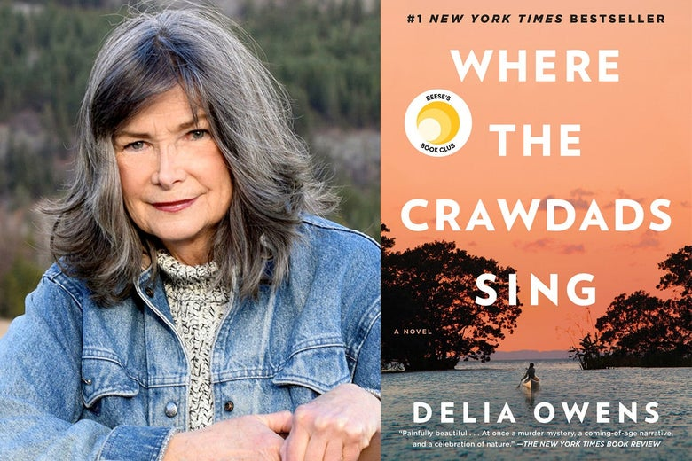

“March is not swamp. Marsh is a space of light, where grass grows in water, and water flows to the sky. Slow-moving creeks wander, carrying the orb of the sun with them to the sea, and long-legged birds lift with unexpected grace—as though not built to fly—against the roar of a thousand snow geese.
Then within the marsh, here and there, true swamp crawls into low-lying bogs, hidden in clammy forests. Swamp water is still and dark, having swallowed the light in its muddy throat. Even night crawlers are diurnal in this lair. There are sounds, of course, but compared to the marsh, the swamp is quiet because decomposition is cellular work. Life decays and reeks and returns to the rotted duff; a poignant wallow of death begetting light.”
On the morning of October 30, 1969, the body of Chase Andrews lay in the swamp, which would have absorbed it silently, routinely. Hiding it for good. A swamp knows all about death, and doesn't necessarily define it as tragedy, certainly not a sin. But this morning two boys from the village rode their bikes out to the old fire tower and, from the third switchback, spotted his denim jacket.
The morning burned so August-hot, the marsh's moist breath hung the oaks and pines with fog. The palmetto patches stood unusually quiet except for the low, slow flap of the heron's wings lifting from the lagoon. And then, Kya, only six at the time, heard the screen door slap. Standing on the stool, she stopped scrubbing grits from the pot and lowered it into the basin of worn-out suds. No sounds now but her own breathing. Who had left the shack? Not Ma. She never let the door slam.
But when Kya ran to the porch, she saw her mother in a long brown skirt, kick pleats nipping at her ankles, as she walked down the sandy lane in high heels. The stubby-nosed shoes were fake alligator skin. Her only going-out pair. Kya wanted to holler out but knew not to rouse Pa, so opened the door and stood on the brick-'n'-board steps. From there she saw the blue train case Ma carried. Usually, with the confidence of a pup, Kya knew her mother would return with meat wrapped in greasy brown paper or with a chicken, head dangling down. But she never wore the gator heels, never took a case.
Ma always looked back where the foot lane met the road, one arm held high, white palm waving, as she turned onto the track, which wove through bog forests, cattail lagoons, and maybe-if the tide obliged-eventually into town. But today she walked on, unsteady in the ruts. Her tall figure emerged now and then through the holes of the forest until only swatches of white scarf flashed between the leaves. Kya sprinted to the spot she knew would bare the road; surely Ma would wave from there, but she arrived only in time to glimpse the blue case-the color so wrong for the woods-as it disappeared. A heaviness, thick as black-cotton mud, pushed her chest as she returned to the steps to wait.
Kya was the youngest of five, the others much older, though later she couldn't recall their ages. They lived with Ma and Pa, squeezed together like penned rabbits, in the rough-cut shack, its screened porch staring big-eyed from under the oaks.
Jodie, the brother closest to Kya, but still seven years older, stepped from the house and stood behind her. He had her same dark eyes and black hair; had taught her birdsongs, star names, how to steer the boat through saw grass.